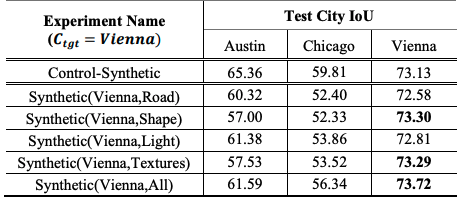

Designing Synthetic Overhead Imagery To Match A Target Geographic Region
The synthetic data used to improve object detection in satellite imagery was generated in a software called CityEngine.
Below are some example segmentations from the dataset.
Below are some prediction masks with misidentified regions highlighted

Synthetic Data Modifications
The overarching design and creation of the synthetic data took place in distinct stages that have different levels of human oversight and interaction. After the whole process, one should have a set of synthetic training images with labels for a particular ''target'' city. We created these changes incrementally.
These include four distinct changes made to a generic random synthetic city designed to approximate the ''target'' city more closely in one specific regard. These four changes are then all combined into a fifth version of the synthetic city. These changes are in the following categories:
- Distribution of building shape
- Specificity of textures
- Lighting variations
- Road network generation
- Total changes
Download
Synthetic Dataset Generation Files
The files below are tar files and require extraction to obtain the scripts and files used to generate syntehtic data in CityEngine. sVienna.tar.gz includes files used to generate a synthetic city looking to resemble Vienna and sAustin.tar.gz includes files used to generate a synthetic city that resmebles Austin.
Included in this Directory
- The synthetic city datasets designed for cities based on rooftop/facade textures, street layout, building shape, lighting intensity, and lighting angle
- CityEngine's .cga rule files to generate the virtual worlds and their labels
- The Python scripts used to 'photograph' the virtual worlds and generate image tiles
- The texture banks used for the specific alterations done
- The two .cej scene files for the specific datasets
README
The README below dives into the details of how exactly to use the files extracted from the tarballs. The procedure includes steps starting from how to first initialize a synthetic city in CityEngine to what rule files should be used to replicate the results in the paper or implement new changes. By following this, users will be able to produce synthetic imagery of designed synthetic cities, with corresponding labelled ground truth imagery. These steps can be used as a template for future explorations into changes that can significantly improve performance in deep learning models.
Results
After implementing incremental changes to synthetic Vienna to make it more closely resemble the actual aesthetic of Vienna, we were able to see a mix of modest improvements and losses in performance in building detection. The results are shown below.
While there isn't one specific change that leads to a considerable improvement in performance from the baseline, these experiments represent a first step toward developing methods for designing synthetic overhead imagery and understanding which factors are most important in doing so.
Usage Considerations
Citation
-
PDF
"Designing Synthetic Overhead Imagery To Match A Target Geographic Region: Prelimnary Results Training Deep Learning Models"
Varun Nair, Paul Rhee, Bohao Huang, Kyle Bradbury, and Jordan M. Malof
IGARSS, 2019
Acknowledgements
We want to thank the NVIDIA corporation for donating the graphics processing unit (GPU) for this work. Bohao Huang would like to thank the Energy Data Analytics Ph.D. Fellowship program from the Duke University Energy Initiative funded by the Alfred P. Sloan Foundation for supporting his work.